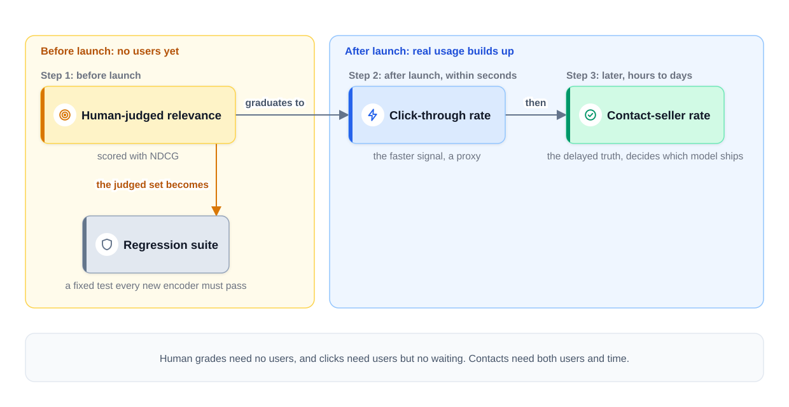
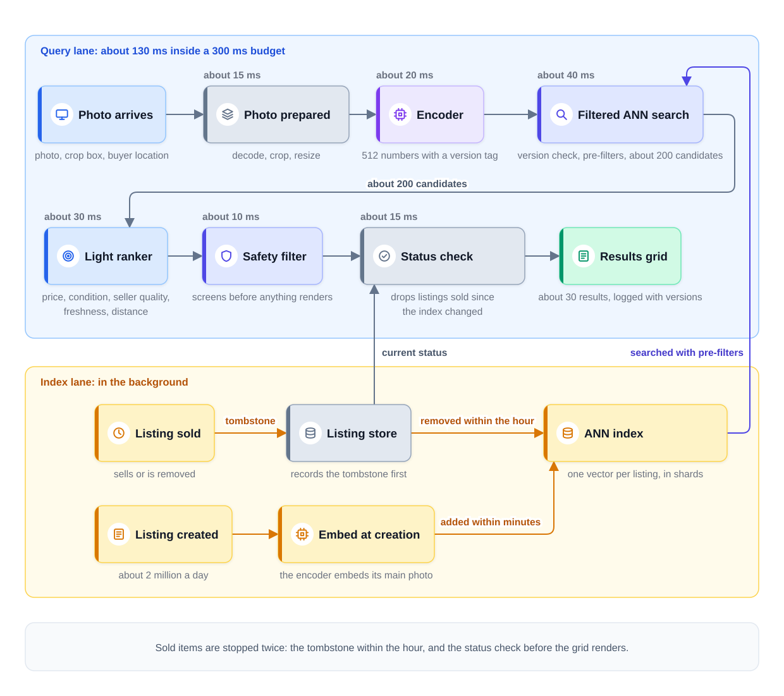
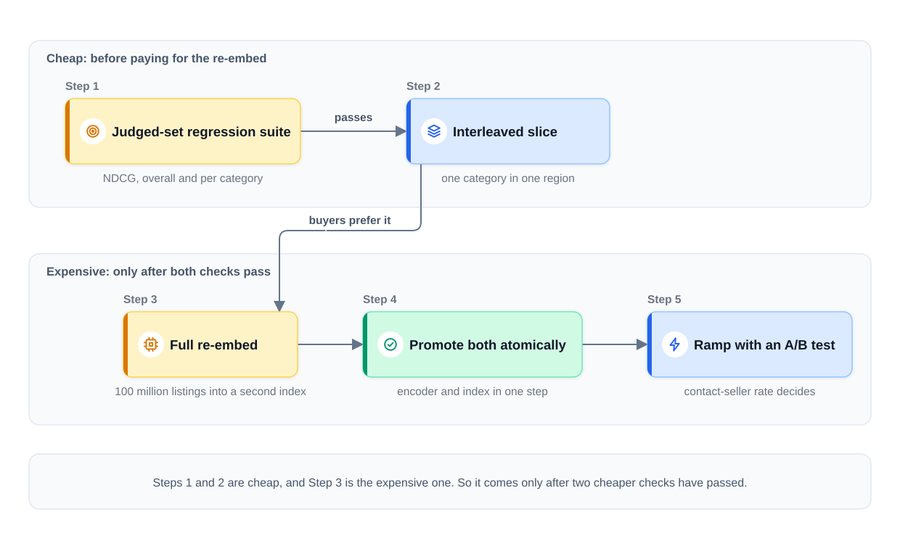

0% completed
System Design of Visual Search for a Marketplace
On This Page
Know the Vocabulary
The Question
The Recognition Move
Part 1: Frame the Problem (minutes 0 to 3)
State the Scope
State the Numbers
Part 2: Define Success (minutes 3 to 8)
The Online Truth
The Launch Problem
The Order in Which Metrics Graduate
Guardrails and Targets
Part 3: Map the Data (minutes 8 to 13)
What the Marketplace Already Has
Free Supervision From Day Zero
The Gap Between Seller Photos and Buyer Photos
Labels After Launch
Freshness
Part 4: Pick the Model (minutes 13 to 18)
Two Approaches That Do Not Work
The Baseline: A Pretrained Image-Text Model
Upgrade 1: Fine-Tune on Marketplace Pairs
Upgrade 2: Category-Hard Negatives
The Light Ranker
Running the Encoder
Part 5: Design the Serving Path (minutes 18 to 30)
Two Lanes
Follow One Search
The Index Lane
Why the Filters Run During the Search
Fail Soft
Part 6: Keep It Working (minutes 30 to 38)
Why an Encoder Upgrade Is Expensive
The Safe Upgrade Path
Track Each Category Separately
The Other Loops
Part 7: Count the Costs (minutes 38 to 43)
The Failure Ledger
The Cost Ledger
Part 8: The Interviewer's Follow-Ups
Part 9: What Each Level Sounds Like
Part 10: Variations to Practice
Common Mistakes
Mistake 1: Assuming Clicks on Day One
Mistake 2: Forgetting That Listings Sell
Mistake 3: Filtering After the Search
Mistake 4: Upgrading the Encoder Alone
Mistake 5: Reading Only the Total
FAQs
Key Takeaways
Check Your Understanding
Know the Vocabulary
This lesson uses the terms below many times. Read them once now, and come back here when a later section needs one.
- Visual search: Finding items from a photo instead of from typed words.
- Listing: One item for sale, posted by one seller. It has photos, a title, a price, a condition, a location, and a status, such as available or sold.
- Query photo: The photo the buyer takes or uploads to start a search.
- Embedding: A list of numbers that captures what a photo or a piece of text shows. Things the model treats as similar get similar numbers.
- Encoder: A model that turns an input, such as a photo or a sentence, into an embedding.
- Shared embedding space: One set of coordinates where both images and text are placed as vectors. A photo of a black jacket and the words "black jacket" can land near each other.
- Image-text model: An encoder trained on a very large number of images paired with captions. It places images and text in one shared embedding space.
- ANN index: An approximate nearest neighbor index, which finds the closest embeddings quickly, but not always the exact closest ones.
- Pre-filter: A condition, such as category or price band, that the ANN search checks while it searches. Only listings that pass the condition can come back.
- Judged set: A fixed set of query photos whose results human reviewers graded, using written guidelines.
- NDCG: Short for normalized discounted cumulative gain, an offline score that checks whether the best results appear near the top of the list.
- Click-through rate: The share of searches in which the buyer taps at least one result.
- Contact-seller rate: The share of searches that lead the buyer to send a message to a seller.
- Fine-tuning: Giving a pretrained model more training on your own data.
- Light ranker: A small, fast model that reorders the retrieved listings using facts the embedding cannot see, such as price.
- Tombstone: A marker that records a listing as gone, so that no later sync or rebuild brings it back.
- Version skew: Serving with an encoder and an index that came from different encoder versions.
The Question
"We run a large second-hand marketplace. Buyers want to take a photo of something they like, such as a chair in a cafe, and find similar items for sale. Design the visual search."
Stop here. Set a 45-minute timer, and run this question yourself, out loud, before you read on. Draw as you would on a whiteboard, and say each exit criterion before you move to the next step. How to Run a Case Study explains the clock and the exit criteria.
Then read the walkthrough below, and compare it with your run step by step.
The Recognition Move
In the first two minutes, the candidate names the known system and what changes.
"This is the search funnel from Module 3, where the query happens to be an image. Three things change. The query has no words, and there are no behavior labels at launch. And listings sell all day, so the index changes all the time."
The known system is Design Search Ranking. That lesson built a funnel: retrieve a few hundred candidates from 100 million products, then rank them, then adjust the page. Visual search keeps that funnel, so retrieval still narrows a huge catalog, and a ranker still orders a short list.
The three changes decide where the minutes go.
-
The query is a photo. The classic inverted index maps each word to the listings that contain it. A photo has no words, so the inverted index has no way to represent it at all. Retrieval must use embeddings in a shared embedding space.
-
There are no behavior labels at launch. Nobody has clicked a visual result yet, so the first measure of quality must come from people who judge results by hand.
-
The index goes out of date every hour. A used sofa sells once, and then it is gone. A result that shows a sold item is this product's signature failure. The buyer wants an item that no longer exists.
The parts that stay the same, such as sharding and logging, get one sentence each, and the three changes get the depth.
Part 1: Frame the Problem (minutes 0 to 3)
State the Scope
The candidate states what is in and what is out, then asks the interviewer to confirm.
- In scope: A buyer takes or uploads a photo in the mobile app. The system returns similar listings that are for sale near the buyer.
- Out of scope: Exact-product recognition, AR try-on, and anything generative.
Exact-product recognition means naming the exact model of an item, such as one brand's chair from one year. That is a different problem, and most second-hand items have no clean product record. AR try-on places an item into the camera view, which is a graphics problem. Generative features, such as drawing a new item, do not help a buyer find one that exists.
State the Numbers
The numbers below are illustrative assumptions for this interview, not facts about a real marketplace.
- Listings: 100 million available listings.
- New listings: about 2 million a day. About 1.5 million a day sell or are removed.
- Searches: about 10 million photo searches a day, or about 120 per second on average. At three times the average, the peak is about 350 per second.
- Latency: results appear about 300 ms after the photo reaches the server.
Notice what the first and last numbers rule out. No careful model can score all 100 million listings for each photo within 300 ms. So the design needs the funnel: a cheap retrieval step over everything, then a careful step over a short list.
Exit criterion: "This is the search funnel, with a photo as the query. Exact-product recognition, AR try-on, and anything generative are out of scope. Does that match what you want?"
Part 2: Define Success (minutes 3 to 8)
The Online Truth
The business goal is that buyers find items and buy them. On many second-hand marketplaces, payment happens outside the app, in person. So the last step the system can see is often a message from the buyer to the seller. The contact-seller rate is the online truth.
Its one problem is that it arrives late. A buyer may save a listing tonight and message the seller two days later. So the contact-seller rate is the delayed truth, and a faster signal is needed beside it.
Click-through rate is that faster signal, because it arrives within seconds of each search. It is a proxy, meaning a stand-in for the real goal, and a proxy can rise while the real goal falls.
The Launch Problem
At launch, neither signal exists, so offline success starts as human-judged relevance.
The team builds a judged set of a few thousand query photos, spread across the main categories. For each photo, reviewers grade the top results with written guidelines. An example scale is: same kind of item and same style, same kind of item, related item, or not relevant. NDCG then scores each result list, giving more credit when the best-graded results sit near the top. Offline Evaluation: Choosing the Metric explains NDCG in more depth.
The Order in Which Metrics Graduate
The success metric graduates in a fixed order as real usage builds up.
Step 1: Before launch, human-judged relevance, scored with NDCG. It is slow to build, but it needs no users.
Step 2: After launch, click-through first. Clicks arrive within seconds, so they show early problems quickly.
Step 3: Later, contact-seller rate as the delayed truth. It arrives in hours or days, and once there is enough of it, it decides which model ships.
The judged set does not retire when behavior arrives. It becomes the regression suite, a fixed test that every new encoder must pass before it reaches users.
The diagram below shows how the metric graduates.

Notice that each signal is faster or slower for a reason. Human grades need no users, and clicks need users but no waiting. Contacts need both users and time.
Guardrails and Targets
Guardrail metrics are numbers that must not get worse, even when the primary metric improves, and this design has four.
- Sold-item rate: the share of shown results that were already sold, which guards the signature failure.
- p95 latency: 95 percent of searches return within about 300 ms. This is an example target, not a guarantee.
- Report rate: how often buyers report a result as offensive.
- Zero-result rate: how often a search returns nothing useful.
Exit criterion: "Human-judged relevance with NDCG gates launch. Click-through comes first after launch, and contact-seller rate decides later. The sold-item rate is a guardrail, and results return within about 300 ms."
Part 3: Map the Data (minutes 8 to 13)
What the Marketplace Already Has
The marketplace has four data sources on day zero.
-
Listing photos. Most listings have several photos, taken by the seller.
-
Listing text. Each listing has a title and a description, written by the seller.
-
Structured fields. These are category, price, condition, location, seller rating, creation time, and status.
-
The judged set. It is built before launch, as Part 2 described.
Search logs come later, and they record each query photo, each result with its grid position, and what the buyer did next.
Free Supervision From Day Zero
Supervision means examples that tell a model what a right answer looks like. Here is a source of it that costs nothing, even before anyone uses the feature.
Photos of the same listing are, by definition, photos of the same object. A seller who posts four photos of one lamp has given the system four views of one item. Any two of them form a positive pair, an example of two inputs that should land close together.
A second free source is each photo paired with its own title. "Green velvet armchair" next to a photo of that chair teaches the link between images and text.
These pairs have flaws, so they need cleaning. Some sellers add a photo of a receipt or a size label. Some titles say only "must go." A text detector can flag photos that are mostly text, so they can be dropped. Short or empty titles can be skipped.
The Gap Between Seller Photos and Buyer Photos
Seller photos are usually taken on purpose, with the item in the center. Buyer photos are often taken quickly, at an angle, with other things in the frame. A model trained only on seller photos may struggle with buyer photos.
Two steps narrow this gap. During training, the system changes the seller photos on purpose, with random crops, blur, and lighting changes. In the app, the buyer can move a crop box around the item before the search runs.
Labels After Launch
After launch, behavior becomes labels, and each label source has a known flaw.
| Signal | When it arrives | Flaw |
|---|---|---|
| Tap on a result | Within seconds | Position bias: results at the top of the grid get more taps |
| Message to the seller | Hours to days later | Rare, and it also depends on price and distance |
| Report of a result | Within minutes | Rare, and some reports are mistakes |
Position bias is the habit of tapping results near the top because they are near the top, not because they are best. Design Search Ranking gives the standard fixes.
Freshness
Two freshness targets come from the signature failure. A new listing should be searchable within minutes, so it is embedded at creation. A sold listing should leave the index within the hour, through a tombstone. Part 5 adds a final status check, so the gap inside that hour does not reach the buyer.
Exit criterion: "Same-listing photo pairs give free supervision from day zero. Clicks arrive in seconds and contacts in days. New listings are embedded at creation, and sold listings are tombstoned within the hour."
Part 4: Pick the Model (minutes 13 to 18)
Two Approaches That Do Not Work
An inverted index cannot serve image queries. It is a lookup table from each word to the listings that contain it. A photo has no words, so the index has no way to represent it at all. Hand-typed tags would cover few listings and miss what makes items look alike.
Classifying the photo, then searching only within its category, also fails. The idea is to sort the query photo into a category, such as "armchairs," and search only there, but it has two problems.
- The categories are too coarse. "Armchairs" holds thousands of styles, so knowing the category does not find the green velvet one.
- Classification fails hard at fuzzy boundaries. Is a wide armchair an armchair or a small sofa? If the classifier picks the wrong category, every right listing is excluded, with no partial credit.
So category becomes a soft signal, or a pre-filter only when the buyer chooses it. It is never a gate that the system guesses.
The Baseline: A Pretrained Image-Text Model
The baseline is a pretrained image-text model with zero fine-tuning. Pretrained means it was already trained on very large amounts of general data. An example of this kind of model is CLIP.
The baseline works in three steps. Embed every listing's main photo with the image side of the model. Embed the query photo with the same model. Then ask the ANN index for the nearest listings.
This baseline ships the first judged-set result. Before any training, the team measures its NDCG on the judged set. That number is the bar every later model must beat. It may already be good enough for some categories.
The shared embedding space also places text in the same coordinates. So the same index can later answer text queries, such as "mid-century lamp," with no second index.
Upgrade 1: Fine-Tune on Marketplace Pairs
Fine-tune the image side of the model on the free pairs from Part 3. Training pulls two photos of the same listing together and pushes photos of different listings apart.
Keep photo-title pairs in the training mix as well. Training on photo pairs alone can pull the image side away from the text side. Text queries would then get worse, even though photo queries improve.
The negatives, the examples that should land far apart, come cheaply at first. Training handles pairs in groups called batches. The other listings already in the same batch serve as negatives. These are called in-batch negatives, and Embeddings and Two-Tower Retrieval explains them.
Upgrade when the baseline misses the NDCG target on the judged set in important categories.
Upgrade 2: Category-Hard Negatives
In-batch negatives are often easy. A random batch may set a sofa against a toaster, and the model learns little from that. A category-hard negative is a different item from the same category, such as another sofa.
Category-hard negatives sharpen the space, because the model must learn what separates one sofa from another: shape, color, fabric, and style. That is the difference buyers care about.
Use a tested share of them, not only them. Two sellers may list the same mass-produced chair. A hard negative from that pair is really the same product, and it teaches the model a false difference.
The Light Ranker
Retrieval returns about 200 listings that look similar. The light ranker reorders them with structured signals that the embedding cannot see.
- Price: a similar chair at three times the usual price is a weaker result.
- Condition: "like new" and "needs repair" can look the same in a photo.
- Seller quality: ratings and response rate.
- Freshness: a listing posted yesterday is more likely to still be for sale than one posted months ago. Some sellers never mark sold items as sold.
- Distance: a second-hand sofa usually needs pickup, so a sofa far away helps few buyers.
The visual similarity score is one more feature. At launch, there are no clicks to learn from. So the first ranker is a simple weighted formula, tuned on the judged set. Once clicks and contacts arrive, a gradient-boosted tree model learns how to combine the features. It is a model built from many small decision trees.
Running the Encoder
The encoder runs on every query photo, so its speed matters, and there are two options.
- About 20 ms on a GPU. This is fast and accurate.
- A distilled variant on a CPU. A distilled model is a smaller model trained to copy the larger one. Here it is trained to produce the larger encoder's embeddings, so its vectors fit the same index. It is cheaper to run, but slower per image and a little less accurate. Measure both on the judged set.
The design uses the GPU path, and it keeps the distilled CPU path as a fallback.
Exit criterion: "The baseline is a pretrained image-text model with zero fine-tuning. I fine-tune on same-listing pairs if it misses the NDCG target, and then add category-hard negatives. A light ranker adds price, condition, seller quality, freshness, and distance."
Part 5: Design the Serving Path (minutes 18 to 30)
Two Lanes
The design has two lanes, and the query lane answers each search while the buyer waits. The index lane runs in the background. It keeps the index matched to what is really for sale.
Follow One Search
The steps below follow one search. The times are an example budget, not a guarantee. Each time is the length of that step.
Step 1: The photo arrives. A buyer in a cafe photographs a green velvet armchair. The app shrinks the photo, sends it with the crop box, and adds the buyer's location.
Step 2: The photo is prepared (about 15 ms). The service decodes the photo, applies the crop, and resizes it to the size the encoder expects.
Step 3: The encoder runs (about 20 ms). The GPU encoder returns one embedding of 512 numbers. The embedding carries a version tag, such as encoder version 7.
Step 4: Filtered ANN search (about 40 ms). The service first checks that the index carries the same version tag as the embedding. Then it searches with pre-filters: status available, within 50 km, and any category or price band the buyer chose. The index is split into shards, and every shard is searched at once, returning about 200 candidates in total.
Step 5: The light ranker reorders (about 30 ms). It scores the 200 candidates with price, condition, seller quality, freshness, and distance.
Step 6: The safety filter screens (about 10 ms). It checks the ranked list before anything renders, for reasons that Part 7 explains.
Step 7: The status check (about 15 ms). The service reads each listing's current status from the listing store. Any listing sold since the index last changed is dropped.
Step 8: The grid is sent and logged. The buyer sees about 30 results, and the log records each result, its grid position, and the encoder and ranker versions.
These steps add up to about 130 ms, which leaves room for the network inside the 300 ms target.
The Index Lane
The index lane handles the two events that change the catalog.
- A listing is created. The encoder embeds its main photo at creation, and the vector is added to the index within minutes.
- A listing sells or is removed. The listing store records a tombstone first, and then the listing leaves the index within the hour.
The tombstone comes first, so that no later sync or rebuild brings the listing back. Chunking and Indexing uses the same order for deleted documents.
The diagram below shows both lanes. In the query lane, each time is the length of that step.

Notice that sold items are stopped twice. The tombstone removes them from the index within the hour. The status check at Step 7 catches any that sold inside that hour.
Why the Filters Run During the Search
The pre-filters, such as category and price band, must run during traversal, not after retrieval finishes. Traversal is the walk through the index from one neighbor to the next.
Suppose the filter runs after the search instead. The index returns the 200 nearest listings from the whole country. The buyer wants items within 50 km and under $150. Perhaps only 2 of the 200 pass, so the grid looks almost empty, and no error appears.
When the filter runs during traversal, the search may pass through listings that fail it, but it never returns them. It keeps going until it has collected enough listings that pass. Embeddings and Vector Databases explains this choice in more depth.
Fail Soft
Each part can fail on its own, so plan each failure in advance.
| What fails | What buyers see |
|---|---|
| The GPU encoder pool | The distilled encoder on CPU. Results are slower and slightly worse. |
| One index shard is slow | Results from the other shards after a timeout |
| The light ranker times out | The ANN order, still filtered and status-checked |
| The safety filter is down | No visual results, and an offer to search by text instead |
The last row fails closed, because showing an unchecked result is worse than showing none. Tag every degraded response in the logs, so that its clicks do not mislead the next training run.
Exit criterion: "The diagram is complete. Each arrow has a time limit and a failure behavior, and the sold-item failure is blocked by the tombstone and the status check."
Part 6: Keep It Working (minutes 30 to 38)
Why an Encoder Upgrade Is Expensive
Embeddings are model-specific, because each encoder places items in its own coordinates. So one encoder's vectors mean nothing to another encoder.
That has a large effect on this design. Upgrading the encoder forces re-embedding all 100 million listings. The old vectors cannot simply be reused, because they sit in the old encoder's space.
It also forces a rule: the model and the index are promoted together, atomically. Atomically means both switch at the same moment, or neither switches. A new encoder queried against last week's index returns wrong results with high confidence. The latency is normal, the scores look normal, and no error appears, yet the results are wrong.
Version tags enforce the rule on every query. Each embedding and each index carries the encoder version that made it. The query service checks that the two tags match, as Step 4 showed. A mismatch stops the query from running against the wrong index and raises an alarm.
The Safe Upgrade Path
Every new encoder version climbs the same ladder.
Step 1: The judged-set regression suite. The new encoder must match or beat the current one on NDCG, overall and in each important category, before every promotion.
Step 2: A small slice, interleaved. Re-embed a small slice of the catalog, such as one category in one region. Then interleave for a small share of searches in that slice. Interleaving blends results from the old and new encoders into one grid. The old encoder searches the old index, and the new encoder searches the re-embedded slice. The system records which encoder supplied the listings that buyers tap. Online Experiments and A/B Testing explains interleaving.
Step 3: The full re-embed. Re-embed all 100 million listings into a second index, next to the current one.
Step 4: Promote both atomically. The new encoder and the new index become one pair, switched in one step. Every query uses the old pair or the new pair, never a mix. Keep the old pair ready for a rollback.
Step 5: Ramp with an A/B test. Send a growing share of buyers to the new pair. The contact-seller rate decides, with the guardrails watching.
The diagram below shows this ladder.

Notice where the cost sits on the ladder. Steps 1 and 2 are cheap, and Step 3 is the expensive one. So it comes only after two cheaper checks have passed.
Track Each Category Separately
Track click-through and contact-seller rate per category, not only in total. A fine-tuned space can be great on furniture and broken on shoes.
Suppose fine-tuning improved furniture a lot, and furniture is a large share of searches. The total contact-seller rate rises. Meanwhile, shoe results got worse, and the total hides it. Per-category numbers show the problem on the first day.
The Other Loops
- The light ranker retrains weekly on new clicks and contacts, with the position-bias fixes from search ranking.
- The judged set grows from failures. Each bad result that buyers report becomes a new judged example, so it is tested on every later encoder.
- The query stream is watched for drift. Drift is a slow change in the inputs, such as new seasonal items or a new kind of phone camera. A rising share of searches whose best match scores low is an early sign. Samples of those searches become new judged examples.
- Index health is watched all the time. The team tracks how long new listings take to become searchable and how long tombstones take to apply. It also tracks how many sold listings the status check drops. A rise in that count is the earliest warning that the index lane is falling behind.
Exit criterion: "The judged-set regression suite gates every encoder, and an interleaved slice comes before any full re-embed. Contact-seller rate, per category, decides. The ranker retrains weekly, and the index lane runs all day."
Part 7: Count the Costs (minutes 38 to 43)
The Failure Ledger
The failure ledger names the top failures and the response to each.
-
A sold item appears in the results. This is the signature failure. The response is the tombstone within the hour, plus the status check at render time. The monitor is the count of listings that the status check drops.
-
Model-index version skew. The response is the atomic-promotion rule, plus a version tag checked per query. A mismatch blocks the query before it can return wrong results.
-
Offensive-adjacency retrievals. A visual lookalike can be harmless as a picture but horrifying in context. For example, a photo of a child's costume could retrieve a similar-looking item from an adult-only category. The response is a safety filter that screens retrieval output before rendering. It uses rules for category pairs that must never appear together, and a policy classifier. Buyer reports feed new rules. Safety and Guardrails covers output checks like this one.
-
A category breaks while the total looks fine. The response is per-category tracking of click-through and contact-seller rate.
The Cost Ledger
The cost ledger multiplies the unit cost by the volume. The prices below are illustrative, so benchmark real hardware before choosing machines.
Memory for the index. Store one vector per listing, and assume 512 numbers per vector and 4 bytes per number.
100,000,000 listings x 512 x 4 bytes = 204.8 billion bytes, or about 200 GB.
That is the raw vectors alone, before graph overhead. The ANN index adds links between neighbors, and the amount depends on its settings. The index is split across machines and copied to more machines for traffic and failures. For example, with graph links and three copies, it can need close to a terabyte of memory, held all day. During an encoder upgrade, a second full index sits beside the first.
Encoding the query photos. Assume 20 ms of GPU time per photo and a GPU at $3 per hour.
- 10 million searches x 20 ms = 200,000 GPU-seconds, or about 56 GPU-hours a day.
- 56 GPU-hours x
170 a day, before batching makes it cheaper.
Encoding new listings. 2 million new listings x 20 ms = 40,000 GPU-seconds, or about 11 GPU-hours, which is about $33 a day.
One full re-embed. 100 million listings x 20 ms = 2 million GPU-seconds, or about 556 GPU-hours. That is about
Notice what the numbers suggest: the encoder is cheap, and the index is likely the main cost. That cost covers its memory, its copies, and the churn. Price the machines that hold the index before you are sure. Churn here means the rate at which listings are added and removed, about 3.5 million a day in total. Every encoder upgrade also costs a full re-embed and a second index for weeks.
Exit criterion: "The top failures are sold items, version skew, offensive lookalikes, and hidden category breaks, each with a response. The encoder costs about $170 a day. The index, at about 200 GB of raw vectors plus copies and churn, is the main cost."
Part 8: The Interviewer's Follow-Ups
The slack minutes, 43 to 45, usually hold one or two of these questions. Answer each one out loud before you read its answer.
1. "Why not classify the photo into a category and search only within it?"
Because the categories are too coarse, and classification fails hard at fuzzy boundaries. "Sofas" holds thousands of styles, so the category alone finds little. And a wide armchair may be classified as a sofa. Then every right listing is excluded, with no partial credit. Category works as a ranking signal, or as a pre-filter when the buyer chooses it.
2. "Results look visually right, but buyers don't contact sellers. What is wrong?"
The lookalikes are likely relevant but overpriced, in poor condition, or far away. The embedding sees only the picture, so it cannot tell. Look at the light ranker first, and check whether price, condition, and distance carry enough weight. Then check the contact-seller rate per category and per distance band.
3. "How would you support 'this jacket, but in black'?"
Use score fusion over two retrievals. One retrieval uses the photo's embedding, and the other uses the words "black jacket," embedded by the same model's text side. Then combine the two retrievals' relevance scores into one ranked list. The two scores may sit on different scales, so normalize them first. Another option is to fuse by rank, as reciprocal rank fusion does in Hybrid Search and Reranking. If listings have a color field, "black" can also become a pre-filter.
4. "A new encoder's re-embed takes two weeks and doubles the index cost. How do you decide whether it is worth it?"
Do not pay for the full re-embed first. Gate the new encoder on the judged suite offline. If it wins there, re-embed a small slice and interleave it for a small share of searches. Pay for the full re-embed only if the slice shows that buyers prefer it.
Part 9: What Each Level Sounds Like
Mid-level. The answer draws a working funnel: an encoder, an ANN index, and a results grid. It names the 300 ms target, but it usually assumes click labels exist on day one. It rarely mentions sold listings or what happens when the encoder changes.
Senior. The answer adds the three changes from the recognition move, without being asked. It starts with a judged set and NDCG, then graduates to clicks and contacts. It runs pre-filters during traversal, tombstones sold listings, and promotes the encoder and index together. It tracks metrics per category, and the light ranker adds what the embedding cannot see.
Staff. The answer reframes the whole design around index churn economics. It treats the index as a perishable asset, something that loses value every hour unless it is kept fresh. About 3.5 million listings change each day, and every encoder upgrade means a full re-embed. So the staff candidate asks how often an upgrade must win to pay for its re-embed. That question sets the upgrade policy before any model is chosen.
Part 10: Variations to Practice
Run one of these a few days later, on a fresh 45-minute clock.
-
Visual search for a furniture retailer that sells 50,000 new products. What changes: churn is low, because stock is restocked instead of sold once. Exact-product recognition may now be in scope. The catalog is small enough to compare every product directly, with no ANN index.
-
"Shop the look" on a photo-sharing app. What changes: one photo holds many items, such as a jacket, a bag, and shoes. A detector must find each item and crop it before the search. The detector becomes the first stage of the funnel.
-
Text-and-photo search for a fashion marketplace. What changes: most searches combine a photo with words, such as "this, but in red" next to the photo. So score fusion becomes the center of the design, and its weights need their own judged set.
Common Mistakes
Mistake 1: Assuming Clicks on Day One
No behavior exists at launch, so a strong answer starts with a judged set and NDCG. Then it lets clicks and contacts take over as they arrive.
Mistake 2: Forgetting That Listings Sell
A sold item in the results is the signature failure. Tombstone sold listings within the hour, and check the status again just before the grid renders.
Mistake 3: Filtering After the Search
A filter applied after retrieval can leave an almost empty grid with no error. Run the pre-filters during traversal.
Mistake 4: Upgrading the Encoder Alone
A new encoder against an old index returns wrong results with normal latency. Re-embed everything, and promote the encoder and the index together, with version tags checked per query.
Mistake 5: Reading Only the Total
A total metric can rise while one category breaks. Track click-through and contact-seller rate per category.
FAQs
Q: Do I need to train an image model from scratch?
No. A pretrained image-text model with zero fine-tuning is the baseline. Fine-tuning on same-listing photo pairs comes only if the judged set shows a gap.
Q: Can an inverted index help at all here?
Not for the photo query, because it has no way to represent a photo. It still helps the rest of the marketplace, such as typed search over titles.
Q: Should a listing with five photos get five vectors?
It can, and it often finds more matches. But it multiplies the index memory, so 100 million listings could become 500 million vectors. Start with the main photo, and add more photos only if the judged set shows a gain.
Q: Is click-through rate enough to decide a launch?
No. Clicks arrive fast, so they come first after launch. But the contact-seller rate is the delayed truth, and it decides which model ships.
Key Takeaways
- Visual search is the search funnel with a photo as the query. The inverted index cannot represent a photo, so retrieval uses a shared embedding space.
- Success graduates in order. Human-judged relevance with NDCG comes first, then click-through, then contact-seller rate as the delayed truth.
- Same-listing photos give free supervision. Fine-tune with in-batch negatives first, then sharpen the space with category-hard negatives.
- Sold items are stopped twice. Tombstones remove them within the hour, and a status check catches the rest before the grid renders.
- The encoder and the index are one unit. An upgrade means re-embedding all 100 million listings and promoting both atomically, with version tags checked per query.
- The index, not the encoder, is the main cost. It holds about 200 GB of raw vectors, and churn keeps changing it.
- In a system design interview, name the three changes early: the photo query, the missing labels, and the churning index. Then cover pre-filters, tombstones, atomic promotion, and per-category metrics.
The next lesson, System Design of a Legal Research Assistant, moves from predictive designs to a generative one. It starts from document Q&A, where one invented citation can cost the customer.
Check Your Understanding
1. Why does the design need a judged set when the marketplace already has millions of users?
Show answer
Because nobody has used visual search yet at launch. Clicks and contacts on visual results do not exist until the feature ships. Human-judged relevance, scored with NDCG, measures quality before launch. Later, the same judged set becomes the regression suite for every new encoder.
2. A buyer filters for items within 50 km and under $150, and the grid shows only two results. What is the likely cause?
Show answer
The filters probably run after retrieval instead of during traversal. The index returned the nearest listings from the whole country, and almost none passed the filters. Running the pre-filters during traversal keeps the search going until enough listings pass.
3. The team deploys a new encoder on Monday, but the index still holds vectors from the old one. What happens, and what prevents it?
Show answer
The searches return wrong results with high confidence and no error. Each encoder places items in its own coordinates, so the old vectors mean nothing to the new encoder. The atomic-promotion rule switches the encoder and the index together. A version tag checked per query blocks any mismatch.
4. A listing sold at 2:10 PM, and a buyer searches at 2:30 PM. The tombstone has not reached the index yet. Does the buyer see the sold listing?
Show answer
No. The status check just before rendering reads the listing's current status and drops it. The tombstone removes listings from the index within the hour, and the status check catches the ones that sold inside that hour.
0 Comments
No comments yet. Be the first to start the discussion!
Reading Progress
0%
On This Page
Know the Vocabulary
The Question
The Recognition Move
Part 1: Frame the Problem (minutes 0 to 3)
State the Scope
State the Numbers
Part 2: Define Success (minutes 3 to 8)
The Online Truth
The Launch Problem
The Order in Which Metrics Graduate
Guardrails and Targets
Part 3: Map the Data (minutes 8 to 13)
What the Marketplace Already Has
Free Supervision From Day Zero
The Gap Between Seller Photos and Buyer Photos
Labels After Launch
Freshness
Part 4: Pick the Model (minutes 13 to 18)
Two Approaches That Do Not Work
The Baseline: A Pretrained Image-Text Model
Upgrade 1: Fine-Tune on Marketplace Pairs
Upgrade 2: Category-Hard Negatives
The Light Ranker
Running the Encoder
Part 5: Design the Serving Path (minutes 18 to 30)
Two Lanes
Follow One Search
The Index Lane
Why the Filters Run During the Search
Fail Soft
Part 6: Keep It Working (minutes 30 to 38)
Why an Encoder Upgrade Is Expensive
The Safe Upgrade Path
Track Each Category Separately
The Other Loops
Part 7: Count the Costs (minutes 38 to 43)
The Failure Ledger
The Cost Ledger
Part 8: The Interviewer's Follow-Ups
Part 9: What Each Level Sounds Like
Part 10: Variations to Practice
Common Mistakes
Mistake 1: Assuming Clicks on Day One
Mistake 2: Forgetting That Listings Sell
Mistake 3: Filtering After the Search
Mistake 4: Upgrading the Encoder Alone
Mistake 5: Reading Only the Total
FAQs
Key Takeaways
Check Your Understanding